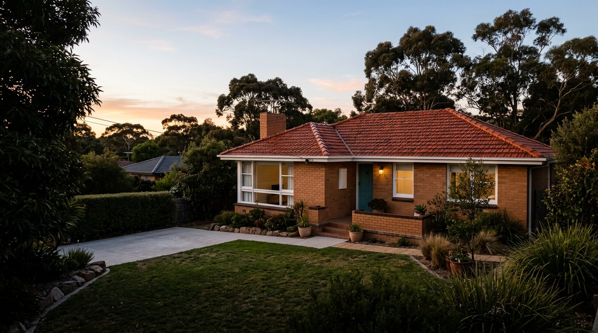
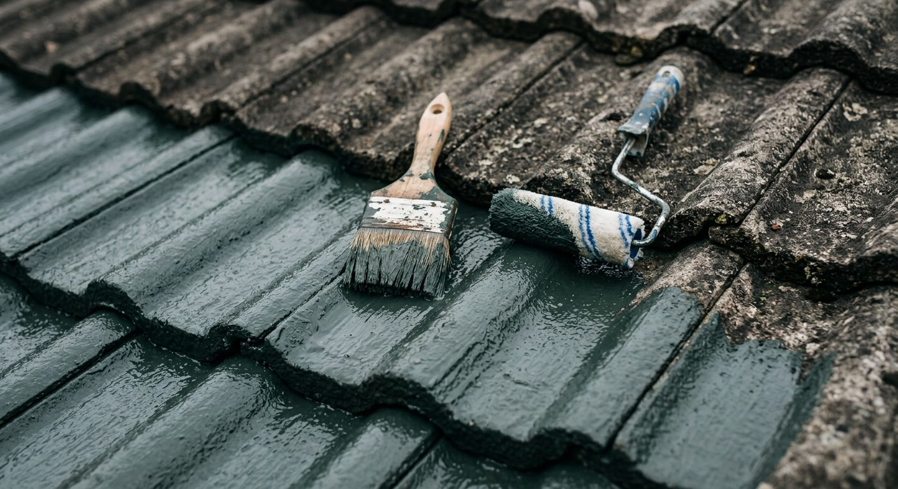
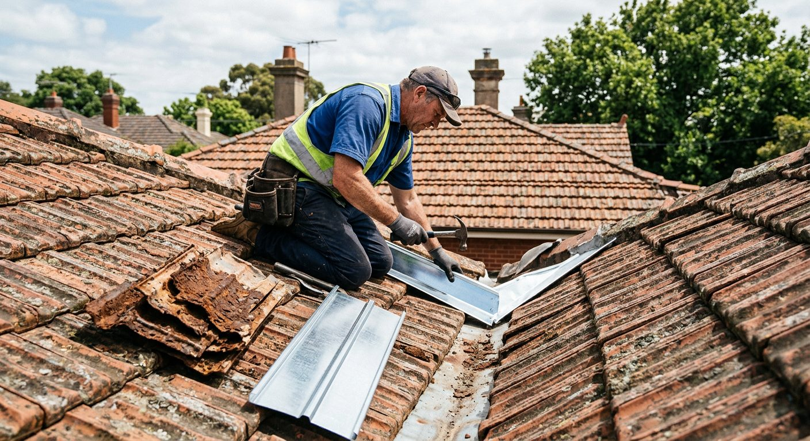

Tile roof restoration specialists, done by hand.
David Borninkhof restores terracotta and cement tile roofs: cleaning, rebedding, repointing and painting, done by hand.
Trading since 2004 · Open 7 days, 8am–6pm · Based in Narre Warren

The right work for the roof you have.
From a single cracked tile to a full restoration, every service is focused on tiled roofs.
Respect the material. Restore the whole roof.
Tile specialists
Terracotta and cement tile roofs are the focus, not a sideline. Cleaning, repairs, rebedding, repointing and painting all sit under one roof.
Done by hand
David does the work himself. You deal with the same person from the first look to the final clean-up.
Since 2004
Two decades of tile work across the south-east, and 234 Word of Mouth reviews averaging 4.9 stars.
Four steps from first call to finished roof.
Clear communication throughout, and work scheduled around your household.
Start with a quote request →Get in touch
Call, WhatsApp or send the quote form with a few details about your roof.
Roof inspection
David looks at the tiles, ridge capping, valleys and pointing to see what the roof needs.
A clear quote
You get a plain explanation of the work, so you can decide what to do and when.
The work, done properly
Repairs, restoration or painting carried out by hand, with the site left clean.
“We couldn't recommend enough.”
4.9 from 234 reviews on Word of Mouth.
“Our roof is from the late 60s. Tiles were broken, water was seeping through, valley had rusted and it looked terrible. David worked tirelessly in the heat avoiding making too much noise whilst our little ones slept. We couldn't recommend enough. Thanks David!”
Walter T.
Google review
“I've had a fantastic experience with David repairing my roof, there was excellent communication throughout the whole process and he was very flexible to work around my schedule to get the job done promptly.”
Kayleigh W.
Google review
“I would highly recommend David from Next Generation Roof Restoration. He has just completed my roof and has done an amazing job at a reasonable price. He was punctual and it was overall a smooth process.”
Deb J.
Google review
Melbourne's south-east.
Based in Narre Warren and working across the surrounding suburbs, from Berwick and Cranbourne to Dandenong and Pakenham.
See service areas →Home / Services
Every service a tiled roof needs.
Roof painting, high pressure cleaning, tile repairs and replacement, restoration, rebedding, repointing, leak detection, storm damage and possum-proofing.

Terracotta and cement tile, start to finish.
Most tile roofs need a combination of work: a clean, a few replaced tiles, fresh bedding and pointing on the ridges, and sometimes a coat of paint. Doing it as one job means it's done in the right order.
If you're not sure what your roof needs, that's what the inspection is for. Choose a service below to see what's involved.
Choose a service.
Signs you need it
Step by step.
Often done together.
Don't climb onto a wet or damaged roof.
Wet tiles are slippery and broken tiles can give way. From the ground or inside, note where water is coming in, move valuables and put a bucket under any drips.
If you can, take photos from a safe spot. They help David understand the damage and are useful if you're making an insurance claim.
If there is a fallen tree, damaged power lines or structural damage, keep clear and call the SES on 132 500 or 000 in a life-threatening emergency.
Common storm damage
- Cracked or broken tiles from hail or debris
- Tiles lifted or shifted by strong wind
- Ridge capping loosened where bedding or pointing has failed
- Blocked or damaged valleys sending water inside
- New water stains on ceilings after heavy rain
From call-out to a sound roof.
Call or message
Ring 0403 425 592 or send photos on WhatsApp, with your suburb and what you can see.
Inspection
David checks the damaged area and the surrounding tiles, ridges and valleys.
Make it watertight
Broken tiles are replaced and loose tiles reset so the roof sheds water again.
Longer-term repairs
Where the storm exposed wider wear, such as old bedding or pointing, you'll get a clear quote to fix it properly.
Home / About
One tradesman. Twenty years of tile roofs.
Next Generation Roof Restoration is David Borninkhof, a sole trader restoring tiled roofs across Melbourne's south-east since 2004.

Done by hand, by the person who quoted it.
David Borninkhof started trading in November 2004 and registered the Next Generation Roof Restoration name in 2012. The focus has always been the same: terracotta and cement tile roofs.
He cleans, repairs, rebeds, repoints and paints roofs himself, by hand. Customers in reviews talk about his communication, his flexibility around their schedules and his care, like keeping the noise down while a young family's children slept.
That steady, word-of-mouth reputation now stands at 234 reviews on Word of Mouth, averaging 4.9 stars.
Values you'll see on the job.
Clear communication
You know what's being done and why, before and during the job.
Respect for your home
Work is planned around your household, and the site is left clean.
The right fix
Honest advice about what the roof needs now and what can wait.
Verified on the public register.
- OwnerDavid Borninkhof, sole trader
- ABN30 345 469 134Active from 15 Nov 2004 · GST registered since 2009
- Business nameNext Generation Roof RestorationRegistered 5 March 2012
- Based in31 Terrapin Dr, Narre Warren VIC 3805
Home / Service areas
Restoring roofs across Melbourne's south-east.
Based in Narre Warren and working across the surrounding suburbs, seven days a week.
Close to home in Narre Warren.
A guide to the area, not a complete list. If your suburb isn't here, call and ask.
Home / Reviews
4.9 stars from 234 reviews.
The Word of Mouth rating built up by two decades of tile roof work across the south-east.
What customers say about David.
“Our roof is from the late 60s. Tiles were broken, water was seeping through, valley had rusted and it looked terrible. David worked tirelessly in the heat avoiding making too much noise whilst our little ones slept. We couldn't recommend enough. Thanks David!”
Walter T.
Google review
“I've had a fantastic experience with David repairing my roof, there was excellent communication throughout the whole process and he was very flexible to work around my schedule to get the job done promptly.”
Kayleigh W.
Google review
“I would highly recommend David from Next Generation Roof Restoration. He has just completed my roof and has done an amazing job at a reasonable price. He was punctual and it was overall a smooth process.”
Deb J.
Google review
Home / FAQ
Questions about tile roofs, answered.
General guidance for south-east Melbourne homeowners. Every roof is different, so an inspection is the best way to know for sure.
What's included in a roof restoration?
It depends on the roof, but a typical tile restoration combines high pressure cleaning, replacing broken tiles, rebedding and repointing the ridge capping, and, where suitable, painting. The inspection decides which parts your roof needs.
What's the difference between rebedding and repointing?
Bedding is the mortar that sits under the ridge capping and holds it in place. Pointing is the flexible layer over the top that seals it. Rebedding replaces the mortar underneath; repointing renews the seal. Older roofs with loose or cracked caps often need both.
Can terracotta tiles be painted?
Cement tiles are the ones most commonly painted, because the coating protects the porous surface. Terracotta is often cleaned and left in its natural finish, though unglazed terracotta can be coated. David can talk you through the options for your roof.
How do I know if my roof needs work?
Look for cracked or slipped tiles, loose ridge capping, crumbling mortar, heavy moss or lichen, rusted valleys, or water stains on your ceilings. If you spot any of these, it's worth having the roof inspected before the next heavy rain.
My roof is leaking. What should I do?
Catch the water inside, move valuables and keep off the roof, especially when it's wet. Then call 0403 425 592. Leak detection finds where water is getting in, which is often not directly above the stain.
Do you help with storm damage?
Yes. Storm damage is one of David's core services, from broken tiles to lifted ridge capping. See the storm damage page for what to do straight after a storm.
How do I stop possums getting into the roof?
Possum-proofing closes off the gaps they use to get in, usually at the eaves, ridges and around broken tiles. In Victoria, possums are protected wildlife, so the work is about sealing entry points once they've left, not trapping them.
Which areas do you cover?
Melbourne's south-east. David is based in Narre Warren and works across nearby suburbs including Berwick, Cranbourne, Pakenham and Dandenong. See the service areas page, or call if you're unsure.
How do I get a quote?
Send the quote form, call or WhatsApp 0403 425 592, or email ngroofrestoration@gmail.com. David works 7 days, 8am–6pm.
Home / Contact
Tell us what your roof needs.
Send a few details and David will get back to you. Prefer to talk? Call or WhatsApp 0403 425 592, 7 days, 8am–6pm.
Thanks, your email is ready to send.
Your email app should have opened with the request filled in. Press send and David will be in touch.
Nothing opened? Email ngroofrestoration@gmail.com or send it on WhatsApp instead.
- Call0403 425 592
- WhatsAppMessage +61 403 425 592
- Emailngroofrestoration@gmail.com
- Hours8am–6pm, 7 days
- Facebookngroofrestoration ↗
31 Terrapin Dr, Narre Warren VIC 3805
Open in Google Maps ↗Ready to bring your roof back?
Call, WhatsApp or send a quote request. Open 7 days, 8am–6pm.